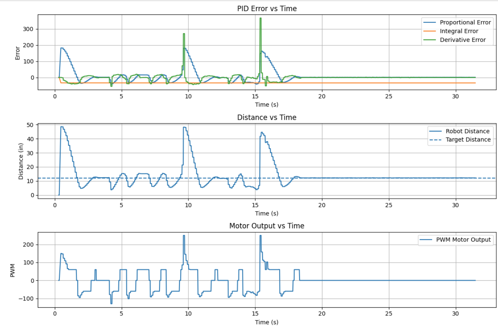

Lab 5: Linear PID Control + Linear Extrapolation
In this lab I used Time of Flight feedback to drive the robot toward a wall and stop at 12 inches. I built a Bluetooth debugging workflow, tuned PID gains, added a deadband near the setpoint, and discussed how the controller could be improved further with extrapolation between ToF updates.
1. Prelab: Bluetooth Debugging Setup
I placed the main ToF and PID behavior inside a Bluetooth command case instead of running it directly in
loop(). This let me start a test from Python, collect data for a fixed number of
iterations, and send the saved arrays back over Bluetooth for plotting.
In GET_ALL, the robot runs through the control loop, stores time, ToF distance, PID
output, and error terms in arrays, then sends the saved data back after the run. I also made an
END_PID command to stop the run early.
Bluetooth Start / Stop Commands
case GET_ALL:
{
const unsigned long starttime = millis();
Serial.println("Start Collecting Data");
ToF_Sensor_1.startRanging();
ToF_Sensor_2.startRanging();
for (int i = 0; i < Acc_length; i++)
{
BLEDevice central = BLE.central();
if (central) {
if (central.connected()) {
write_data();
read_data();
}
}
if (!PID_state) break;
// sensor read + PID + array logging
}
PID_state = true;
ToF_Sensor_1.stopRanging();
ToF_Sensor_2.stopRanging();
stop_motors();
break;
}
case END_PID:
{
PID_state = false;
ToF_Sensor_1.stopRanging();
ToF_Sensor_2.stopRanging();
stop_motors();
break;
}2. Position Control Goal
The goal was to have the robot drive toward a wall and stop at a setpoint of 12 inches. The main challenge was balancing speed and stability so the robot moved quickly without overshooting into the wall.
3. Proportional Gain Tuning
I started with proportional control only and tested Kp = 0.1, 3,
3.5, and 4. At Kp = 0.1 the response was too weak. At
Kp = 3 the robot moved toward the wall but felt slow. At Kp = 4 it became too
aggressive and touched the wall.
I chose Kp = 3.5 as a good starting point. Later, after more tuning with
integral and derivative action, I also tested a stronger final setup.
PID Output From My Code
distance1_in = distance1 * 0.0393701f;
error1P = distance1_in - targetDistance1;
float control = kp * error1P + ki * error1I + kd * error1D;
duty1 = abs(control);4. Deadband Compensation
After tuning Kp, I added a deadband to reduce oscillation near the setpoint. Small motor
commands were not always enough to overcome friction, so the robot could jitter close to the target.
In my code, the deadband was set to 0.75 inches. Inside that range, the robot stops; otherwise it drives forward or backward depending on the sign of the error.
Deadband Logic From My Code
float deadband = 0.75;
if (fabs(error1P) < deadband) {
stop_motors();
dutystate = 0;
}
else if (error1P > 0) {
drive_forward(duty1);
dutystate = 1;
}
else {
drive_backward(duty1);
dutystate = -1;
}5. Integral and Derivative Tuning
I then tested integral gain values of 0.02, 0.01, 0.005, and
0.002. These were harder to tune because even small changes caused noticeable differences
in behavior. I also tested derivative control to reduce overshoot as the robot approached the wall.
A combined starting point I used was Kp = 3.5, Ki = 0.02, and
Kd = 0.8. After more tuning, I ended up testing
Kp = 5, Ki = 0.01, and Kd = 1.0.
Integral, Derivative, and Clamp Logic
error1I = error1I + error1P * PID_dt * (-1);
if (PID_dt > 0) {
error1D = (error1P - error1Plast) / PID_dt;
} else {
error1D = 0;
}
error1Plast = error1P;
if (error1I > 4000) error1I = 4000;
if (error1I < -4000) error1I = -4000;6. ToF Sampling Rate and Extrapolation
The ToF sensor updates slower than the main control loop, so I did not want the controller to block and wait for a new reading every iteration. Instead, my code checks whether new ToF data is ready and only updates the saved distance when a fresh measurement is available.
My ToF Sensors take around 50-60 ms to update, while my main PID control loop runs around 158.8 loops per second (about 6.3 ms per loop). This means the controller can run multiple iterations between ToF updates, which is why non-blocking logic is important.
I kept the extrapolation discussion here because that is the next step for improving performance between sensor updates, but the current code below shows the non-blocking ToF update logic I actually used.
Current ToF Update Logic
// Linear extrapolation for ToF distance when no new sensor data is ready
if (ToF_Sensor_1.checkForDataReady()) {
float distance1 = ToF_Sensor_1.getDistance();
ToF_Sensor_1.clearInterrupt();
distance1_in = distance1 * 0.0393701f; // mm -> inches
distance1_est = distance1_in; // update latest estimate
}
else if (i > 1) {
// Use the last two saved distance points to estimate current distance
float x1 = Tof1_in[i - 2];
float x2 = Tof1_in[i - 1];
float t1 = time_list[i - 2] / 1000.0f; // ms -> s
float t2 = time_list[i - 1] / 1000.0f; // ms -> s
float t_now = (float)(millis() - starttime) / 1000.0f;
if ((t2 - t1) > 0.0001f) {
float slope = (x2 - x1) / (t2 - t1);
distance1_est = x2 + slope * (t_now - t2);
}
else {
distance1_est = x2;
}
distance1_in = distance1_est;
}7. Wind-Up Protection
For the 5000-level version of the lab, I also considered integrator wind-up. This happens when the integral term keeps building while the motors are saturated or the robot cannot respond well, which can cause extra overshoot later.
In my code, I handled this by clamping the accumulated integral error to a fixed range.
Wind-Up Clamp From My Code
error1I = error1I + error1P * PID_dt * (-1);
if (error1I > 4000) error1I = 4000;
if (error1I < -4000) error1I = -4000;8. Experimental Results
The plots below should show how the robot approached the wall, how close it got to the 12 inch setpoint, and how the motor commands changed during the run. I also included placeholders for repeated test videos.
Kp = 5.0, Ki = 0.01, Kd = 1.0

With Random Input

Kp = 3.5
Kp = 3.5 & Ki = 0.1
Kp = 5 & Ki = 0.01 & Kd = 1.0
9. Conclusion
Overall, this lab showed how controller tuning, sensor timing, and practical motor limits affect real
robot behavior. My early proportional tuning showed that Kp = 3.5 was a good starting
point, and later tuning with Kp = 5, Ki = 0.01, and Kd = 1.0
gave a stronger final response. Deadband logic improved behavior near the setpoint, and clamping the
integral term helped prevent wind-up.